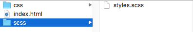

SASS
(Syntactitcally Awesome Style Sheets)
Le CSS possède des limites, c'est pourquoi des personnes on créer ce que l'on appelle des pré-processeurs du langages CSS.
En gros, c'est une extension du langage CSS.
Mais SASS ça sert à quoi ?
Il ajoute des options bien pratique tel que : les variables, le nesting, les mixins, et d'autres options très utiles !
D'autre solution que SASS ?
Effectivement il existe d'autres langages pré-procésseur CSS
Less, Stylus et SCSS mais SASS va plus loin dans la simplification.
On peut même dire arivederci au {}.
Mais dans un soucis de compréhension tout les exemples seront en SCSS
Un Pré-processeur ?
Un Pré-processeur signifie qu'il y a un procéssus de compilation entre le code d'entrée et le code de sortie
Tu profite de tout les avantages de SASS et le compilateur lui s'occupe de traduire tout ça en CSS
Le Top non ?
Tout cela laisse entendre qu'il va falloir installer SASS
Et c'est le cas !
L'installation
Linux et Mac OS
Il suffit d'entrer une ligne de commande dans le terminale
gem install sassEasy
Windows
- Il faut installer Ruby
- Après l'installation il devrait avoir un fichier exécutable du nom "Start command prompt with Ruby". Exécute le en tant qu'administrateur
- Ruby utilise un système de gestion des package appelé "gem".
- Il te suffit donc de taper dans ton terminal
sudo gem install sassComment créer un projet avec SASS
Nous allons avoir besoin du terminal et d'un projet
Nous devons créer un dossier CSS et un dossier SCSS au même niveau
Le dossier SCSS devras contenir un fichier style.scss
Enfin dans le terminale en étant dans le dossier du Projet
Il suffit d'entrer:
sass --watch scss:cssA partir de maintenant à chaque sauvegarde du fichier SCSS la compilation se fera automatiquement dans un fichier style.css dans le dossier CSS.
Ok ...
Bon, à partir de maintenant on rentre dans le vif du sujet !
Les variables
SASS permet d'attribuer des valeurs à des variables
Et cela très facilement il suffit d'écrire
$variable:valeur;SCSS
$color-red: #ff0000; $title-size: 20px; body{ color: $color-red; font-size: $title-size; }
CSS
body{ color: #ff0000; font-size: 20px; }
Le nesting
Le nesting c'est appliquer le principe d'héritage au CSS
Un exemple sera plus parlant
SCSS
nav{ background-color: #FEFEFE; ul{ li{ margin-left:5px; } } }
CSS
nav{ background-color: #FEFEFE; } nav ul li { margin-left:5px; }
On peut l'utilisé avec les symboles de sélecteur CSS
SCSS
article{ ~ article{ padding-top: 2em; } > h2 { border : 1px solid #FF0000; } + footer{ margin-top: 0px; } * { color: #000; } }
CSS
article ~ article { padding-top: 2em; } article > h2{ border : 1px solid #FF0000; } article + footer{ margin-top: 0px; } article * { color:#000; }
On peut aussi sélectionné le parent avec "&"
SCSS
a{ color: blue; &:hover{ color:green; } display:inline-block; }
CSS
a{ color:blue; display:inline-block; } a:hover{ color:green; }
On peut aussi ajouter un contexte avec "&"
SCSS
article{ h2{ font-size: 2em; } .info &{ h2{ font-size: 1.5em; } } display: inline-block; }
CSS
article{ display:inline-block; } article h2 { font-size:2em; } .info article h2{ font-size:1.5em; }
Les media queries
SCSS
.container{ margin: 0 auto; @media screen and(min-width: 1280px){ margin: 25px; } @media screen and (min-width: 768px){ margin: 10px; }
CSS
.container{ margin : 0 auto; } @media screen and (min-width: 1280px){ .content{ margin : 25px; } } @media screen and (min-width: 768px){ .content{ margin : 10px; } }
extend
Nous permet d'appeller les propriete d'un séléecteur à un autre.
SCSS
.button{ width: 50px; height: 25px; border: 1px solid #DDD; } .button-success{ @extend .button; border-color: green; }
CSS
.button, .button-success{ width: 50px; height: 25px; border: 1px solid #DDD; } .button-success{ border-color: green; }
CSS à SCSS
Les Mixins
Les mixins c'est quoi ?
C'est une options qui permet de réutiliser des morceaux entier de CSS.
On peut même lui donner des arguments, pour créer des formes complexes avec une seule ligne de code !
SCSS
@mixin border-radius($radius) { -webkit-border-radius: $radius; -moz-border-radius: $radius; -ms-border-radius: $radius; border-radius: $radius; } .box { @include border-radius(10px); }
CSS
.box { -webkit-border-radius: 10px; -moz-border-radius: 10px; -ms-border-radius: 10px; border-radius: 10px; }
Mais du coup, il n'y as pas de librairie de mixin ?
Oui il y a des librairies de mixin SASS :
Je te laisse de renseigner sur le sujet c'est très utiles notament le principe de sprites.
Les feuilles de styles partiales
Avec SASS on peut importer différentes feuilles de styles dans le fichier principale.
Un exemple d'arborésence pouvant êtres utilisé

Et voici comment on import les fichier dans le fichier mère
@import"compass"; @import"compass/reset"; @import"scss/mixins"; @import"scss/variables"; @import"scss/fonts"; @import"scss/general"; @import"scss/header";
Comme tu peux le remarquer nous n'avons pas besoin de spécifier l'extesion du fichier importé étant donné que ce sera tous des .scss, SASS se charge de prendre le bon fichier
Les opérateurs
SASS permet de faire des calculs on peut donc utilisé les opérateur habituelles + , - , / , * et % .
Un exemple
2em + 2em; //4em 2em - 2em; //0em 5px * 4; //20px 23 % 4, //3 font: 24px / 1.5em; //24px / 1.5em; font: 20px / 5 + 1; //5px; font: (20px/5); //4px; font: $size / 5; //4px; $size: 25px / 5; //4px;
SCSS
$container: 960px; $main: 600px; #sidebar{ width: $container - $main; }
CSS
#sidebar{ width : 360px; }
Les fonctions de nombre
SASS à quelques fonction prédéfini pour les nombres
percentage: (46/72); //63.88889%; round: (2.3); //2; ceil: (2.2); //3; floor: (2.6); //2; abs: (-52); //52;
Mais on fait quoi avec ses opérateur ?
Les Conditions
On peut aussi appliquer des conditions un peu comme en JavaScript.
Ce qui veut dire que l'on peut se servir des opérateur logique <, >, <=, >=, ==, !=
1 < 20 // true 10 <= 20 // true 10 > 5 // true 10 >= 5 // true 1 + 4 == 5 //true #FFF == white //true small != big //true
On peut donc ajouter un @if, @else if, @else, a notre SASS par exemple pour avoir différent thème
SCSS
$theme: sunset; div{ @if $theme == dust { background : #E3E09D; color: $color } @else if $theme == sunset { background : #E38A49; color: #FFDAD2 }
La fonction if
$container-bg: #000; .container{ color: if($container-bg == black, #fff, #000); }
Les Boucles
On peut faire des boucles avec SASS !
@for, @while et @each
Si SASS c'est pas magique.
La boucle @for
SCSS
@for $level from 0 to 5{ .tag-#{$level + 1} { font-size: .7em + ($level * .5em); } }
CSS
.tag-1{font-size : 0.7em;} .tag-2{font-size : 1.2em;} .tag-3{font-size : 1.7em;} .tag-4{font-size : 2.2em;} .tag-5{font-size : 2.7em;}
La boucle @while
SCSS
$level: 0; @while $level > 5{ .tag-#{$level + 1} { font-size: .7em + ($level * .5em); } $level : $level + 1 }
CSS
.tag-1{font-size : 0.7em;} .tag-2{font-size : 1.2em;} .tag-3{font-size : 1.7em;} .tag-4{font-size : 2.2em;} .tag-5{font-size : 2.7em;}
La boucle @each
SCSS
$reseau-sociaux : facebook, twitter, linkedin, github; @each $reseau-sociaux in $reseau-sociaux { .#{$reseau-sociaux}-icon{ background: url('/img/#{$reseau-sociaux}.png'); } }
CSS
.facebook-icon{ background : url('/img/facebook.png');} .twitter-icon{ background : url('/img/twitter.png');} .linkedin-icon{ background : url('/img/linkedin.png');} .github-icon{ background : url('/img/github.png');}
Les boucles peuvent donc faire gagner énormément de temps !
Utiliser les au maximum pour coder un minimum ; )